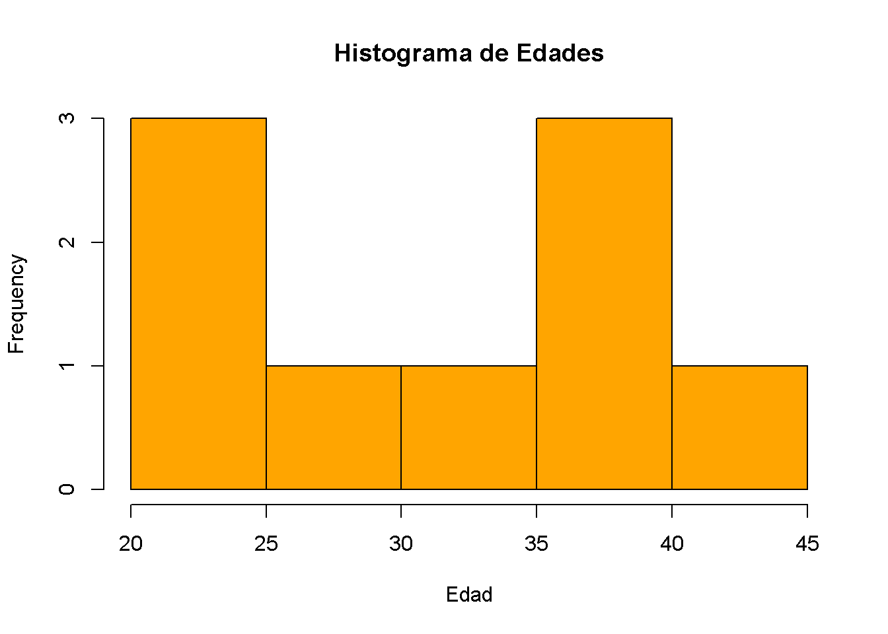
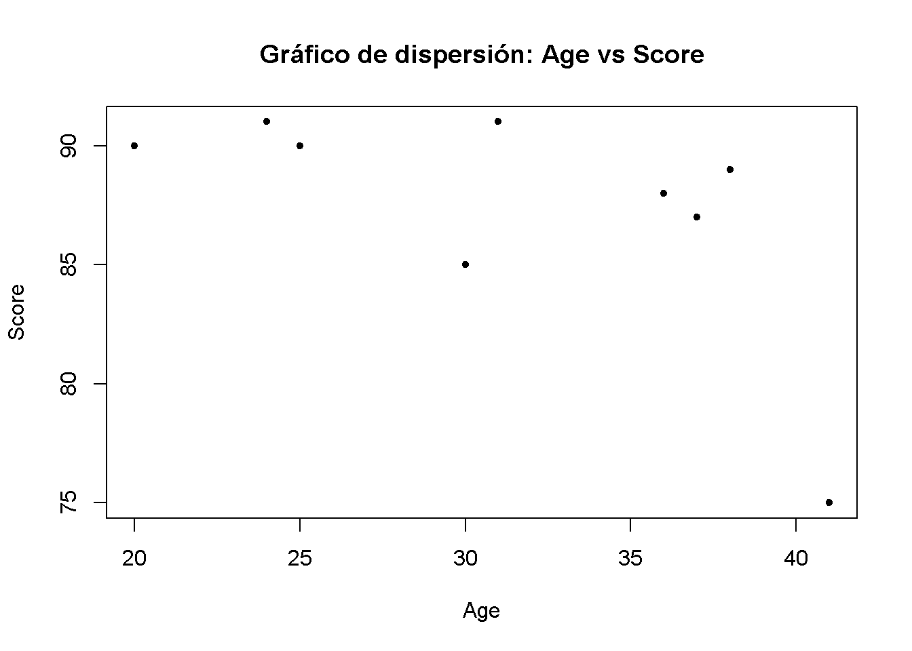

Inclusión de código en Informes RMarkdown
Exploraremos como incluir y ejecutar código en informes RMArkdown. Se aprendera sobre los “chunks” de código y cómo cargar y examinar una base de datos en RMarkdown
Chunks de código
Los “chunks” de código son bloques de código que puedes incluir en tu informe. Puede ser ejecutado y mostrar los resultados directamente en el informe.
## [1] 15## [1] 3## [1] 78## [1] 6.5## [1] 210## [1] 10.5Carga y muestra de una Base de datos (DB)
Para cargar una DB en Markdown, primero debemos asegurar tener la biblioteca adecuada, instalada. Se usara la biblioteca readxl para cargar la DB que están en un archivo excell (.xls o .xls)
# Ejemplo de creación de archivo de excell con R
class2_data <- data.frame(
Name = c(
"Luis", "Maria", "Xavier",
"Laura", "Alberto", "Felipe",
"Augusto", "Julio", "Ximena"
),
Age = c(
20, 37, 30, 36, 38, 25, 24, 31, 41
),
Score = c(
90, 87, 85, 88, 89, 90, 91, 91, 75
)
)
# Exportar dataframe a un archivo excell
library(openxlsx)
write.xlsx(class2_data, file = "clase_2_data.xlsx")## Name Age Score
## 1 Luis 20 90
## 2 Maria 37 87
## 3 Xavier 30 85
## 4 Laura 36 88
## 5 Alberto 38 89
## 6 Felipe 25 90## Name Age Score
## 4 Laura 36 88
## 5 Alberto 38 89
## 6 Felipe 25 90
## 7 Augusto 24 91
## 8 Julio 31 91
## 9 Ximena 41 75Estadisticas descriptivas
## Min. 1st Qu. Median Mean 3rd Qu. Max.
## 20.00 25.00 31.00 31.33 37.00 41.00## Min. 1st Qu. Median Mean 3rd Qu. Max.
## 75.00 87.00 89.00 87.33 90.00 91.00Gráficos
# Crear histograma variable Age
hist(
data_class$Age,
main = "Histograma de Edades",
xlab = "Edad", col = "orange"
)
# Crear gráfico de dispersion Age vs Score
plot(
data_class$Age, data_class$Score,
xlab = "Age", ylab = "Score",
main = "Gráfico de dispersión: Age vs Score",
pch = 20
)